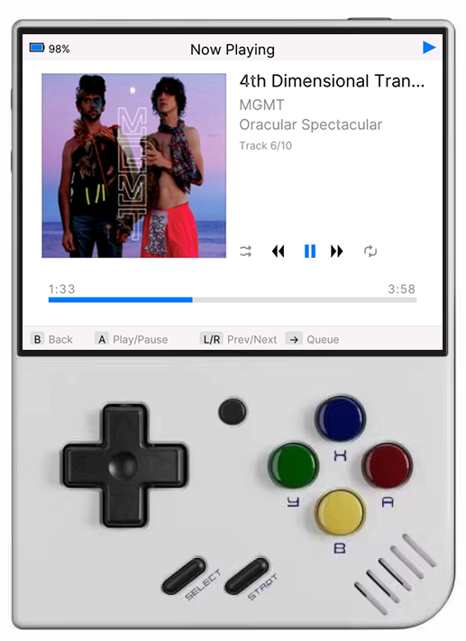
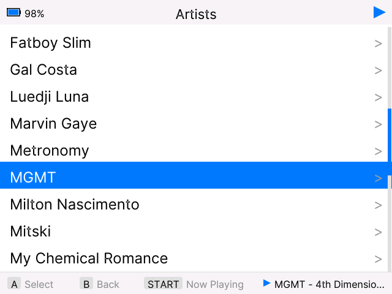
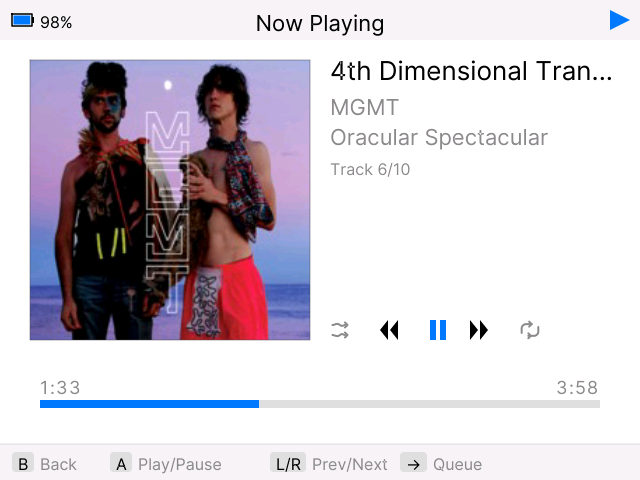
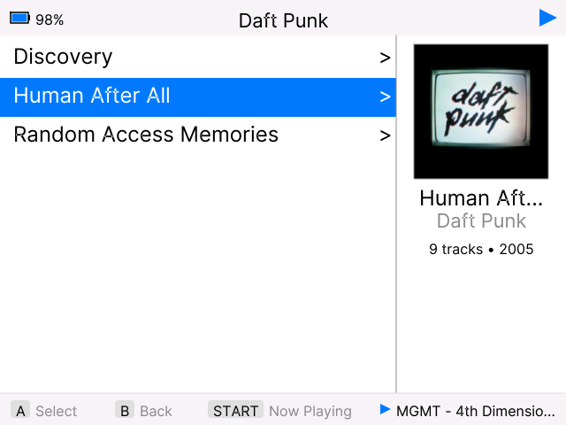
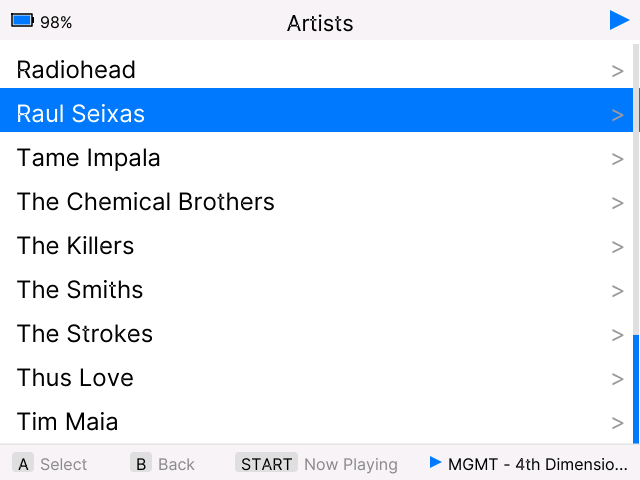

MiyooPod is an MP3 player for the Miyoo Mini Plus, Mini v4, and Mini Flip running OnionOS. Inspired by the classic iPod interface.
Key Features:

Main Menu

Now Playing

Albums List

Artists
Install MiyooPod on your Miyoo Mini Plus running OnionOS:
MiyooPod folder to /App on your SD cardMiyooPod reads music files from your SD card's Music folder:
/mnt/SDCARD/Media/Music/
/Media/Music/ folderMiyooPod supports MP3, FLAC, and OGG/Vorbis audio files.
Recommended: MP3 @ 256kbps — for the best balance of quality and performance on the Miyoo Mini's hardware.
FLAC and OGG are fully supported. MP3 is recommended for best performance — the Miyoo Mini's audio output doesn't benefit from lossless quality, and high-bitrate files may cause playback issues.
MiyooPod supports album artwork in two ways:
MiyooPod automatically extracts album art embedded in your MP3 files' ID3 tags. Most music files downloaded from iTunes, Amazon, or properly tagged using tools like MusicBrainz Picard will already have embedded artwork.
For albums without embedded artwork, MiyooPod can automatically fetch album covers from MusicBrainz:
Note: This requires an internet connection via WiFi. Artwork is stored in
/mnt/SDCARD/Media/Music/.miyoopod_artwork/
Choose from 11 visual themes. Each theme customizes colors for backgrounds, selections, headers, progress bars, and all UI elements.
Available themes: Classic iPod, Dark, Dark Blue, Light, Nord, Solarized Dark, Matrix Green, Retro Amber, Purple Haze, Cyberpunk, and Coffee.
Press the POWER button to lock the screen (and again to unlock), preventing accidental presses during playback. Hold POWER for a few seconds to quit the app.
Automatically lock the screen after a period of inactivity (1, 3, 5, or 10 minutes, or disabled) to save battery while music keeps playing.
Automatically download missing album artwork from MusicBrainz. The app will scan your library and fetch high-quality cover art for albums without embedded images.
Enable or disable debug logging. Useful for troubleshooting issues or when reporting bugs. Logs are written to the Music folder for easy access.
Force a complete rescan of your music library. Use this after adding new songs or when the library becomes out of sync.
View app version, author information, and access support resources. Includes version checking to notify you of available updates.
Your preferences are automatically saved to:
/mnt/SDCARD/Media/Music/.miyoopod_settings.json
The library cache files may be corrupted. Connect your SD card to your computer and delete these hidden files:
/mnt/SDCARD/Media/Music/.miyoopod_library.json
/mnt/SDCARD/Media/Music/.miyoopod_state.json
MiyooPod will rescan your library on the next launch.
Open Settings → Clear App Data to wipe the artwork cache and library metadata. MiyooPod will rebuild everything on the next launch. You can then use Fetch Album Art again to re-download missing covers.
If the app is misbehaving, enable logging from Settings → Toggle Logs, reproduce the issue, then check the log file on your SD card:
/mnt/SDCARD/App/MiyooPod/miyoopod.log
Attach this file when reporting a bug on GitHub Issues.
If an OTA update left the app in a broken state, manually reinstall the latest version:
MiyooPod folder to /App on your SD card, overwriting the existing filesMiyooPod is built using Go (Golang) 1.22.2 with native C bindings (CGO) for low-level graphics and audio operations. The application is cross-compiled for ARM architecture and optimized for embedded Linux systems.
Music library metadata is serialized to JSON and stored at:
/mnt/SDCARD/Media/Music/.miyoopod_library.json
User preferences (theme, lock key, log settings) are stored at:
/mnt/SDCARD/Media/Music/.miyoopod_settings.json
Downloaded album art is cached in:
/mnt/SDCARD/Media/Music/.miyoopod_artwork/
MiyooPod was developed with the help of AI coding assistant tools, and portions of its codebase include AI-generated code.
MiyooPod uses PostHog to capture error logs, exceptions, crashes, and user interactions. If you are not comfortable with this, you can go into Settings and disable the Developer Logs option.
MiyooPod is open-source and free to use. Here's how you can help make it even better:
MiyooPod is open-source! Developers are welcome to contribute improvements, bug fixes, and new features via pull requests.